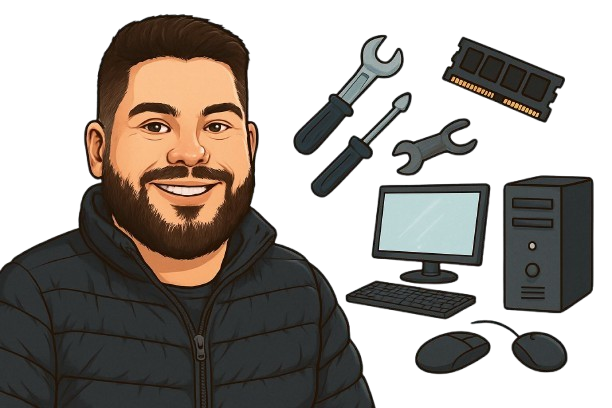

Soluções de TI para Sua Empresa
Oferecemos suporte técnico e consultoria.
Oferecemos suporte técnico e consultoria.
Oferecemos suporte remoto e presencial para empresas e residências. Resolvemos problemas de rede, lentidão, formatação, instalação de sistemas e muito mais, com atendimento rápido e confiável.
Analisamos sua infraestrutura tecnológica e propomos melhorias em segurança, desempenho e organização. Ideal para empresas que querem crescer com tecnologia estável e moderna.
Montamos e configuramos redes cabeadas e Wi-Fi, com roteadores, switches e cabeamento estruturado, para garantir estabilidade e performance no seu ambiente de trabalho ou casa.
Tem dúvidas, precisa de suporte ou quer um orçamento? Estamos prontos para te atender no WhatsApp.
A Gabriel TEC nasceu com o propósito de oferecer soluções digitais práticas, eficientes e acessíveis para o dia a dia.
Unimos tecnologia, design e simplicidade para entregar serviços que realmente funcionam — sempre com foco em agilidade, personalização
e um atendimento próximo.
Seja para criar, organizar ou automatizar, estamos aqui para transformar ideias em realidade com criatividade e compromisso.